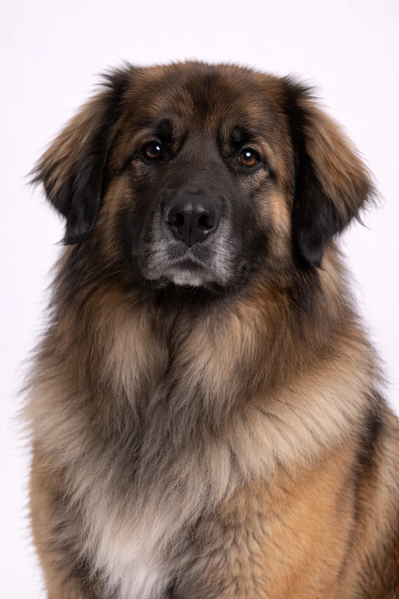

Leonberger
The Leonberger was bred to resemble a lion and serve as a versatile working dog and family companion.
品种评分
性格
概述
The Leonberger was bred to resemble a lion and serve as a versatile working dog and family companion.
性格
The Leonberger is known for being friendly, playful, gentle. They're excellent with children and make wonderful family pets. Their intelligence and eagerness to please make training enjoyable. Early socialization helps them develop into well-rounded companions.
健康
Generally healthy with a lifespan of 9 年. Common concerns include hip dysplasia and bloat and skin conditions. Regular veterinary checkups and preventive care are important. Maintaining a healthy weight helps prevent many health issues.
运动
Moderate exercise needs with daily walks and regular play sessions. They enjoy a mix of physical activity and relaxation time. Interactive games and training sessions provide mental stimulation. A consistent exercise routine keeps them healthy and happy.
⦿ 这个品种适合您吗？
✓ 最适合
- 有孩子的家庭
- Those with space for a giant breed
- Water enthusiasts
- Those wanting a gentle giant
✗ 不太适合
- 公寓居民
- Those wanting a long-lived dog
- Neat freaks (drool and shedding)
- 炎热气候
我们的评价: Majestic, lion-like gentle giants. Leonbergers are patient, friendly family dogs but need space and have shorter lifespans.